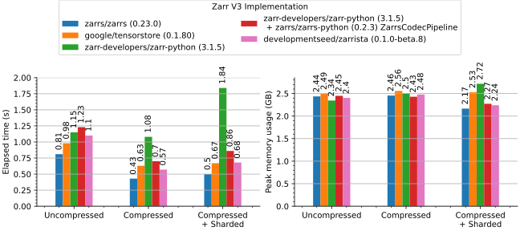
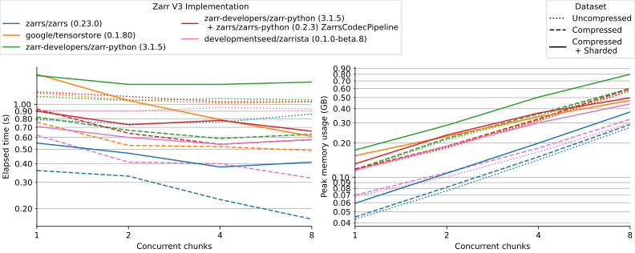
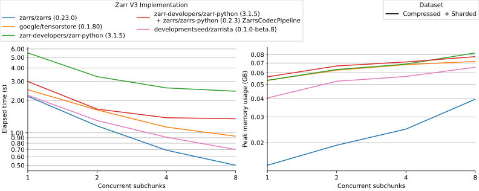

Zarrista: Faster Zarr for Python¶
This blog post was fully written by humans.
We're releasing Zarrista, a new high-performance Python library for interfacing with Zarr data, the pre-eminent open data format for storing chunked N-dimensional arrays. Zarrista is powered by Rust and the Zarrs library.
Advanced Zarr users can start working with Zarrista today, but we plan to integrate it into Zarr-Python, so that all users can benefit from improved performance, without needing code changes.
Why a new library?¶
Improved performance with compiled code¶
Zarr-Python, the reference Python library for working with Zarr, is primarily written in Python. Aside from a few compiled dependencies, all of Zarr-Python's own source code is Python.
In contrast, Zarrista is fully compiled. There's a thin layer of type definitions in Python but the rest is compiled Rust code.
This allows for significant performance improvements compared to Zarr-Python. See the Benchmarks section for more information.
Planned integration into Zarr-Python¶
However, to avoid fracturing the ecosystem, we plan to integrate Zarrista as a native backend into Zarr-Python.
We hope that a Zarrista backend for Zarr-Python can deliver these performance improvements without any need for end users to change their code. Follow Zarr-Python PR #4064, which uses Zarrista to prototype generic backends for Zarr-Python.
Standalone library for lower-level APIs¶
For users who are not tied to Zarr-Python, it may be possible to eke out the best possible performance using Zarrista directly.
For example, Zarrista allows users to separate IO-bound network operations and CPU-bound codec operations, for optimal scheduling.
Zarrista also offers full async and sync counterparts for users to choose what works best for them.
A complete stack: Zarrs, Zarrista, and Zarr-Python¶
Zarrista is built as a "dumb, direct" binding to Zarrs, the Rust Zarr library. Zarrista exposes as many APIs as possible from Zarrs, while avoiding creating its own APIs from scratch.
This means that Zarrista's source code contains no Zarr-specific logic at all. All Zarr-specific logic is either lower-level in Zarrs or higher-level in Zarr-Python. This keeps Zarrista itself maintainable and means that any improvements can be submitted to Zarrs directly, which benefit both Rust and Python users.
The only functionality that Zarrista adds on top of Zarrs is specific to Python integration:
- Interpreting numpy-like indexing
- Efficient data exchange with Python
- Asyncio support
- Pythonic API patterns
Keeping Zarrista separate from Zarr-Python also simplifies Zarr-Python's maintenance and ensures Zarr-Python doesn't need a build process for Rust code.
Benchmarks¶
Zarrista is the fastest Python chunked array library, in line with Google's Tensorstore. It's surpassed only by the Rust Zarrs library, which Zarrista uses internally.
These benchmarks only use the synchronous local file system APIs. We'd like to benchmark remote object store performance in the future.
Refer to our PR to zarr_benchmarks for more information.
Read All¶
The minimum time and peak memory usage to read an entire dataset into memory.

Read Chunk-By-Chunk¶
The minimum time and peak memory usage to read a dataset chunk-by-chunk into memory.

Read Subchunk-By-Subchunk¶
The minimum time and peak memory usage to read a dataset subchunk-by-subchunk into memory.

Integrations¶
Zarrista integrates into existing tooling to keep the interface as simple as possible.
Obstore¶
Obstore is a high-performance interface to object stores like Amazon S3, Google Cloud Storage, and Azure Storage.
Pass an Obstore store instance, such as an S3Store, GCSStore or AzureStore, directly to any API that accepts AsyncStore such as AsyncArray.open or AsyncGroup.open.
Icechunk¶
Icechunk is an open-source, cloud-native, transactional storage engine for Zarr data.
Pass an Icechunk Session directly to any API that accepts AsyncStore such as AsyncArray.open or AsyncGroup.open.
Supporting all Zarr data types¶
Zarr and Zarr extensions define myriad data types that arrays can contain.
Included are the standard fixed-width types like uint8, int32, and float64, but also more exotic types like variable-width string, and specialized floating-point variants like Float8E5M2 or ComplexFloat6E3M2FN.
Though not all Zarr data types are easily expressed in Numpy arrays, Zarrista aims to support all Zarr data types by defining generic containers representing Rust memory and offering multiple exchange mechanisms to access the raw data.
Reading arrays with fixed-width types will return FixedLengthTensor, while arrays with variable-width types return VariableLengthTensor. Each of these classes represent regions of Rust memory and offer various ways to access the raw data.
(The tensor containers should support all data types in principle, but we need more testing to validate some of the more exotic types are working as they should.)
Zero-copy data exchange¶
Zarrista supports zero-copy data exchange between Rust and Python wherever possible.
FixedLengthTensor |
VariableLengthTensor |
|
|---|---|---|
| Buffer Protocol |  |
 |
| DLPack | |
|
| Numpy | |
1 |
| Apache Arrow | |
|
Numpy conversion relies on the Buffer protocol under the hood.
Usage Example¶
Open a store, then open an Array from it:
from zarrista import Array
from zarrista.store import FilesystemStore
store = FilesystemStore("data/example.zarr")
array = Array.open(store, path="/temperature")
Inspect the array's metadata:
array.shape
# [720, 1440]
array.dtype
# DataType(float32 / <f4)
array.dimension_names
# ["lat", "lon"]
Read a subset of the array. Indexing returns a [Tensor], which converts to a [NumPy] array:
data = array[0:128, 0:128]
arr = data.to_numpy()
arr.shape
# (128, 128)
You can also read individual chunks by their grid index:
data = array.retrieve_chunk([0, 0])
Async example¶
from zarrista import AsyncArray
from obstore.store import S3Store
store = S3Store("bucket", region="us-west-2")
array = await AsyncArray.open(store, path="/temperature")
Inspect the array's metadata:
array.shape
# [720, 1440]
array.dtype
# DataType(float32 / <f4)
array.dimension_names
# ["lat", "lon"]
Read a subset of the array. Indexing returns a [Tensor], which converts to a [NumPy] array:
data = await array[0:128, 0:128]
arr = data.to_numpy()
arr.shape
# (128, 128)
You can also read individual chunks by their grid index:
data = await array.retrieve_chunk([0, 0])
AI Usage¶
Zarrista's source code is minimally vibe-coded.
Most of the library code was written by hand by Kyle, sometimes resulting from a conversation with Claude.
Documentation and type stubs are mixed. Much documentation is written by hand but Python type stubs are partially kept up to date via Claude.
Almost all current tests were written by Claude.
Future Work¶
We plan future work on:
- Integration into Zarr-Python
- Improved APIs for splitting IO-bound and CPU-bound work
- Expanded indexing/selection support
- Async benchmarks with data on object store
-
Though we support reading variable-width strings to Numpy arrays, it is not zero copy. ↩